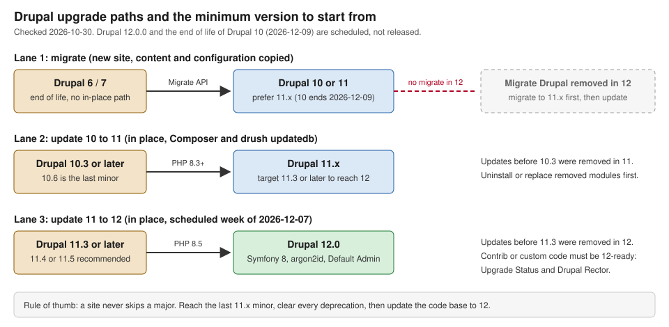

Preparing for Drupal 12
|
This content was generated with the assistance of AI and should be verified against the official documentation before being relied on in production. |
Drupal 12 is a major release, but it is deliberately not a rebuild: like Drupal 9, 10 and 11 before it, it is the last
minor of the previous major with every deprecated API removed and the platform requirements raised. A site that has kept
up with the 11.x minors, has no deprecated calls left and runs on the right PHP version updates to 12 with Composer and
drush updatedb. A site that has fallen behind has to catch up first. This page explains what is scheduled, what is
removed, what is replaced, and how to prepare a site (the running example is the Meridian Museum with its module
meridian_collection, theme meridian and recipe meridian_events) before the new major arrives.
It was checked on 2026-10-30 against Drupal 11.4.x, the 12.0.0-beta1 (2026-09-30) and 12.0.0-beta2 (2026-10-14)
release notes, the 12.0.x branch, Drush 13 and 14, Composer 2.9 and PHP 8.3 or later. On that date Drupal 12.0.0 and
the end of life of Drupal 10 are scheduled, not released; every date below that lies in the future is a plan taken from
the official schedule and can still move. Re-read the release notes of 12.0.0 itself before touching production.
The schedule
The core release schedule fixes the following dates (all weeks start on Monday, UTC):
| Release | Scheduled | Notes |
|---|---|---|
Drupal 12.0.0 alpha 1 |
2026-09-02 (released) |
First tag of the 12.0.x line. |
Drupal 12.0.0 beta 1 |
Scheduled for the week of 2026-09-14, tagged 2026-09-30 |
APIs are considered stable enough for contributed projects to start porting. Beta releases are not intended for production. |
Drupal 12.0.0 beta 2 |
2026-10-14 |
Security fixes, removal of the Navigation Top Bar module and of query serialization (see below). |
Drupal 12.0.0 release candidate 1 |
Scheduled for the week of 2026-11-09 |
Feature freeze for the major; only bug fixes follow. |
Drupal 12.0.0 final |
Scheduled for the week of 2026-12-07 |
Also the scheduled week of Drupal 11.5.0. |
End of life of Drupal 10 |
2026-12-09 |
Drupal 10.6 is the last minor of the 10.x line. Security support for 10.6.x and 11.3.x ends in the same window. |
Drupal 12.1.0 |
Scheduled for the week of 2027-06-14 |
Alpha 1 is scheduled for the week of 2027-05-03. |
Three consequences follow for site owners:
-
Drupal 10 stops receiving security fixes on 2026-12-09. A site still on 10.x after that date is unsupported. A new site must not be started on Drupal 10. The path off Drupal 10 is described in Upgrading Drupal 10 to 11.
-
Drupal 11 remains supported until the release of Drupal 13, so there is no deadline to move from 11 to 12 within the next months. What matters is to stay on a supported minor: security advisories cover only the two most recent minors (see Drupal versions, release cycle and support).
-
The first stable release of a major is not the best moment to jump. Contributed modules need time to publish Drupal 12 releases. The practical plan is to prepare during the betas, update custom code, and move once the modules the site depends on declare Drupal 12 compatibility.
The figure below puts the three kinds of upgrade side by side, with the minimum version each one must start from.

What requires attention before 12
| Area | Summary |
|---|---|
Platform |
PHP 8.5 or later (with argon2 support), Symfony 8, Twig 3.28 or later, Guzzle 8, htmx 4, PHPUnit 12.5 or later, and a database floor of MariaDB 10.11, MySQL 8.0, PostgreSQL 18 or later and SQLite 3.45. |
Starting version |
11.3.0 or later. The update system of Drupal 12 refuses to start from 11.2 or earlier, because all update functions before 11.3.0 were removed. |
Extensions leaving core |
Nine modules (Ban, Contact, Field Layout, History, Search, Settings Tray, Shortcut, Telephone, Toolbar) and three themes (Claro, Olivero, Stable 9) move to contributed projects. Migrate Drupal and Migrate Drupal UI are removed with no contributed replacement. |
Defaults |
Password hashes use argon2id. The Default Admin theme replaces Claro as the administration theme. |
Code |
Every API deprecated in 11.x for removal in 12 is gone, together with the Backbone and Underscore JavaScript libraries. Query objects can no longer be serialized. |
Platform requirements
PHP 8.5
Drupal 12 requires PHP 8.5.0 or later; the 12.0.x composer.json declares >=8.5.0. PHP 8.6 is not supported
(support for it is tracked separately). The official PHP requirements table for Drupal 10.4 to 12.0 reads as follows:
| PHP | Drupal 10 (10.4 to 10.6) | Drupal 11 (11.1 to 11.4) | Drupal 12.0 |
|---|---|---|---|
8.1 and 8.2 |
Yes |
No |
No |
8.3 and 8.4 |
Yes |
Yes |
No |
8.5 |
No |
Yes, on 11.3 and 11.4 only |
Yes |
This table gives the Meridian team its first and cheapest preparation step: PHP 8.5 already runs Drupal 11.3 and 11.4. The PHP upgrade can therefore be done on Drupal 11, in production, weeks before the Drupal 12 update, which splits one risky change into two small ones. Do the same for the other infrastructure items (database version, extensions) whenever they are already supported by the current minor.
For password hashing, PHP must be compiled with argon2 support. The official page says that most or all PHP 8.5 installations already include it. Check it on every environment, not only on the developer machine:
php -v
php -r 'echo implode("\n", password_algos()) . "\n";'The list of algorithms must include 2y (bcrypt) and, for the new default, argon2i and argon2id. If the second
command lacks argon2id, the hosting image has to change before the update.
Symfony 8, Twig, Guzzle and other libraries
The 12.0.x branch of drupal/core requires Symfony components at ^8.1 (console, dependency-injection,
event-dispatcher, http-kernel, routing, validator, yaml and the others), Twig at ^3.28.0, guzzlehttp/guzzle at
^8.0.1 and doctrine/lexer at ^3. The consequences:
-
Custom code that extends Symfony classes or implements Symfony interfaces (an event subscriber, a console command, a normalizer for the Serialization API, a validator constraint) must be compatible with Symfony 8. Typed signatures that were optional on Symfony 6 and 7 are mandatory now. Run the checks described in the readiness workflow below before assuming a class still works.
-
Any module or custom code that calls Guzzle directly must be reviewed against Guzzle 8. Prefer the
http_clientservice of Drupal over creating a client by hand. -
htmx moves from 2.0 to 4.0. Custom behaviors and
hx-*attributes written for the htmx that Drupal 11.3 introduced should be re-read against the backward-incompatible changes listed in the htmx 4 documentation (see AJAX and htmx). Since 11.3, proxies and CDNs in front of the site must already pass the htmx headers (HX-Request,HX-Redirect) through; that stays true in 12. -
PHPUnit moves from 11.5 to 12.5, and PHPUnit attributes become mandatory in place of annotations. Versions below 12.0 are no longer supported. The beta 2 notes mention test updates for a newer PHPUnit 13.2; check which PHPUnit version the final 12.0.0 pins before upgrading a test pipeline. See Automated testing.
-
Coder, the PHP_CodeSniffer standard package, moves to version 9, with minor backward-compatibility breaks; the
phpcs.xmlof a project may need adjustments (see Coding standards and static analysis). -
Several older versions of packages (including
egulias/email-validator,guzzlehttp/psr7,justinrainbow/json-schemaandsebastian/diff) are dropped from the lock file. Packages added aretwig/html-extra(for the class-variance helpers in Twig) and Twig-CS-Fixer for Twig coding standards.
Databases
The database requirements page and the 12.0.0-beta1 release notes do not list exactly the same values, so both are stated:
| Database | Drupal 10 | Drupal 11 | Drupal 12 |
|---|---|---|---|
MariaDB |
10.3.7 or later |
10.6 or later |
10.11 or later (both sources) |
MySQL |
5.7.8 or later |
8.0 or later |
8.0 or later (both sources) |
PostgreSQL |
12 or later |
16 or later |
18 or later on the requirements page; 19 in the beta 1 release notes |
SQLite |
3.26 or later |
3.45 or later |
3.45 or later, with the JSON1 extension |
Until the final 12.0.0 release settles the PostgreSQL value, a site on PostgreSQL should plan for 18 as the minimum and
treat 19 as the version the beta was tested with. Two related changes are worth knowing. Code and tests for database
drivers inside the DRUPAL_ROOT/drivers directory were removed, so custom drivers must be provided by a module. The
Database Schema Definition API gained support for generated columns.
Web servers, Windows and proxies
Apache 2.4.7 or later and nginx remain the supported web servers. IIS support was removed in Drupal 11.0, and hosting
Drupal directly on Windows in production has been deprecated since 11.3 (Linux on Windows through WSL is recommended;
Windows support for development continues). The .htaccess shipped with the latest security releases of 11.4 and 10.6
swaps assert.active for zend.assertions; re-apply local customizations of scaffold files after every core update, as
the upgrade guide asks.
For the full list of server software and the hosting trade-offs see Requirements and hosting.
The minimum starting version: 11.3
The single most important rule of the upgrade guide is that Drupal 12 refuses to update from 11.2 or earlier: all core updates before 11.3.0 were removed. The recommended starting point is the latest 11.x minor, at least 11.4 and 11.5 once it is released (scheduled for the same week as 12.0.0). Likewise, the 10 to 11 path starts from 10.3.0 or later, and 10.6 is the last Drupal 10 minor; see Upgrading Drupal 10 to 11.
The semantic-versioning rule behind this is "continuous upgrades": the last minors of the old major contain every new
API alongside the deprecated one, so a site can clear deprecations while it is still on a supported release. A site that
needs to skip several minors has to update minor by minor, running drush updatedb each time, instead of jumping.
-
A site on 11.2 or earlier first updates to the latest 11.x with Composer, runs the database updates, and only then starts the major update.
-
A site on Drupal 10 goes to 11.x first. There is no direct 10 to 12 update.
-
A site on Drupal 6 or 7 does not update at all; it migrates. See below and Migrating from Drupal 7.
Older books are written for a world where these constraints did not exist. Drupal 10 Masterclass (2023) presents Drupal 11 as a future release, treats Drupal 7 as still supported, and lists database and PHP minimums (MySQL 5.7.8, MariaDB 10.3.7, PHP 8.1, Symfony 6.2) that are all below the floor of Drupal 11 and 12. Drupal 10 Development Cookbook (2023) targets 10.0 with PHP 8.1, MariaDB 10.3 and PHPUnit 9.5. None of those values apply to a new project.
Extensions removed or moved to contributed projects
The 12.0.0-beta1 release notes list fourteen extensions that leave core: nine modules and three themes move to contributed projects, and two modules are removed with no contributed replacement. For each one, a site has two choices before the update: stop using it (uninstall it) or keep using it through its contributed project. The release notes say, near the instruction to uninstall, "Do not uninstall the extension, since this would destroy the extension’s configuration and data", so the order is: add the contributed project with Composer while the site is still on 11.x, update the site, and keep the module installed. Uninstalling is right only for extensions that are really not used. The official 11 to 12 upgrade guide summarizes the same rule: either stop using them or replace them with contributed versions before upgrading.
Modules
| Module | Machine name | What to do |
|---|---|---|
Ban |
|
Moves to contrib. Needed only if the site blocks IP addresses from the UI; a web application firewall, the web server or a CDN is usually the better place for IP blocking. |
Contact |
|
Moves to contrib. The Meridian school booking form ( |
Field Layout |
|
Moves to contrib. Lets the Manage display and Manage form display pages arrange fields in a layout. Layout Builder does not depend on it; the two modules are independent. |
History |
|
Moves to contrib. Provides the "new" and "updated" markers on content. |
Search |
|
Moves to contrib. The core Search module (node search, |
Settings Tray |
|
Moves to contrib. Provided the off-canvas tray for editing blocks and other configuration in place. |
Shortcut |
|
Moves to contrib. Provided personal shortcut sets, shown in the toolbar. |
Telephone |
|
Moves to contrib. A field type for phone numbers; the field data of existing content stays usable only while the module remains installed, so install the contributed project before the update. |
Toolbar |
|
Moves to contrib. The classic horizontal and vertical administration toolbar. The Navigation module is the core replacement; see the section about the administration theme below. |
Migrate Drupal |
|
Removed with no contributed replacement. Drupal 6 and 7 data can still be migrated into Drupal 11 and then updated. |
Migrate Drupal UI |
|
Removed with no contributed replacement. The Migrate API itself stays in core. |
Two additional removals appear in the beta notes. The Syndicate block plugin, deprecated in 11.2.0 without a
replacement, is removed; placements of that block are deleted during the update. The Navigation Top Bar module, removed
in 12.0.0-beta2, has to be uninstalled before updating a site to that beta. The 11.4.0 release notes announced
Contact, Field Layout, History, Migrate Drupal, Migrate Drupal UI and Telephone for a move to contributed projects; the
12.0.0 notes narrow that statement for the two migrate modules: they are removed and nobody maintains a replacement.
The beta1 changelog also moves the text_with_summary field type into its own module; that module stays in core, so it
is not in the table, and body fields with a summary keep working after the update.
Themes
-
Claro leaves core and becomes a contributed project. Sites that depend on it as their administration theme can install the contributed theme, or switch to Default Admin.
-
Olivero, the default front-end theme of Drupal 10 and 11, leaves core. A site that uses Olivero directly, or as a base theme of its own theme, must install the contributed theme or stop depending on it.
-
Stable 9 leaves core. It was deprecated in 11.4. A theme whose
.info.ymlhasbase theme: stable9has to choose a different base: the supported pattern is a Starterkit-generated theme that is not a sub-theme of anything (base theme: false), described in Starterkit and sub-themes. Classy and Stable were already removed in Drupal 10.0 for the same reason.
The Meridian theme was generated with Starterkit, so it has no base theme to replace. A site that was built with
base theme: olivero or base theme: stable9, however, must do some work (see the checks below).
Default Admin and the Navigation module
Claro was the administration theme for years. Drupal 12 replaces it with the Default Admin theme (the 12.0.0-beta1 notes say it "is now stable" and the profile and recipe commit titles call it the Admin theme), based on the Gin theme that the community used on most large sites. Installation profiles and recipes now make it the default administration theme. Practical consequences:
-
A site that uses Claro as its administration theme keeps working only if the contributed Claro is installed before the update; otherwise the configured theme is missing after the update. Decide explicitly, in configuration, which theme the administration area uses.
-
Custom CSS or templates that target Claro markup (
claro/*library overrides,claro_preprocess_*functions, a sub-theme of Claro for the editorial interface) will not be applied to Default Admin. They have to be rewritten or restricted to the contributed theme. See Administration UI, navigation and admin themes. -
The classic Toolbar module moves to contrib; its core replacement is the vertical Navigation module. The experimental top bar that came with it was removed in 12.0.0-beta2. The Meridian editors, who use Shortcut sets heavily, either install the contributed Shortcut project or move their favourites to the new navigation.
-
The "Design Tokens & CSS variables API" added since alpha 1 is the starting point for theming administrative colors; do not copy the colors of the previous theme.
Check which theme the site uses, and set it explicitly while still on 11.x:
# Which themes are enabled, and which are the default and admin themes?
drush theme:list --status=enabled
drush config:get system.theme admin
drush config:get system.theme defaultSource: Drush: theme:list
If system.theme shows claro, olivero or stable9 anywhere, those settings must be changed or the contributed
project added to the Composer file before the update (see the Composer example below).
Removed code: Backbone, Underscore and deprecations
All code deprecated for removal in 12.0.0 is removed, including entire deprecated modules and themes and deprecated methods, functions and arguments. For the JavaScript layer this means:
-
Backbone and Underscore are no longer shipped. Core libraries that depended on them were rewritten. A custom or contributed library that lists
core/backboneorcore/underscoreas a dependency in a*.libraries.ymlfile will fail to load and must either bundle its own copy through npm or stop using them. -
For the libraries that remain in core and how to declare dependencies, see Libraries and assets.
To find out which libraries a module or theme still references, search its *.libraries.yml:
grep -rnE 'core/(backbone|underscore)' web/modules/custom web/themes/customOther behaviour changes from the 12.0.0 notes that have an effect on stored configuration or files:
-
Allowed-HTML configuration of filter plugins is sorted alphabetically, so a first
drush config:exportafter the update shows a harmless diff in every text format. Commit it once, in the upgrade commit. -
Dangerous characters in file names (shell metacharacters) are replaced with underscores.
-
The setting
update_fetch_with_http_fallbackwas removed. If HTTPS connections to updates.drupal.org fail, the underlying TLS problem has to be solved (see Logging, status report and troubleshooting). -
CurrentPathStackno longer leaks memory in long-running processes, relevant to queue workers anddrushdaemons (see Queue, batch and cron APIs). -
__sleep()and__wakeup()were removed from the entity query base class (beta 2). A query object can no longer be serialized. The classic mistake is to store a query inside a queue item or a batch context; store the entity ids and rebuild the query when the worker runs.
<?php
namespace Drupal\meridian_collection\Plugin\QueueWorker;
use Drupal\Core\Entity\EntityTypeManagerInterface;
use Drupal\Core\Plugin\ContainerFactoryPluginInterface;
use Drupal\Core\Queue\Attribute\QueueWorker;
use Drupal\Core\Queue\QueueWorkerBase;
use Drupal\Core\StringTranslation\TranslatableMarkup;
use Symfony\Component\DependencyInjection\ContainerInterface;
#[QueueWorker(
id: 'meridian_collection_sync',
title: new TranslatableMarkup('Synchronise collection objects'),
cron: ['time' => 30],
)]
final class SyncObjectWorker extends QueueWorkerBase implements ContainerFactoryPluginInterface {
public function __construct(
array $configuration,
$plugin_id,
$plugin_definition,
private readonly EntityTypeManagerInterface $entityTypeManager,
) {
parent::__construct($configuration, $plugin_id, $plugin_definition);
}
public static function create(ContainerInterface $container, array $configuration, $plugin_id, $plugin_definition): static {
return new static($configuration, $plugin_id, $plugin_definition, $container->get('entity_type.manager'));
}
/**
* Receives plain scalars only: the query is rebuilt here, never serialized.
*/
public function processItem($data): void {
$storage = $this->entityTypeManager->getStorage('collection_object');
$ids = $storage->getQuery()
->accessCheck(FALSE)
->condition('accession_number', $data['accession_number'])
->range(0, 1)
->execute();
foreach ($storage->loadMultiple($ids) as $object) {
$object->set('on_display', (bool) $data['on_display'])->save();
}
}
}Source: Plugin API overview
Notice that the example calls accessCheck() explicitly, because an entity query without it throws an exception since
Drupal 10. Here the check is disabled because the worker runs as a background process, not on behalf of a visitor.
See Database API and entity queries and
Queue, batch and cron APIs.
Argon2id password hashing
Drupal 12 changes the default password hashing algorithm from bcrypt to argon2id, the memory-hard algorithm that
current guidance recommends against GPU-based cracking. The algorithm is a kernel parameter, so it can be set per
environment in a services file loaded from settings.php. The change record documents the parameter name
password.algorithm:
-
2yselects bcrypt. -
~(null) selects PHP’sPASSWORD_DEFAULT. -
the default in Drupal 12 is argon2id.
PHP must support the algorithm that is configured, otherwise users cannot log in. The change record does not say what
happens to hashes that already exist in the users_field_data table, and the release notes do not either; treat the
first login after the update on a staging copy as part of the acceptance test, and keep bcrypt hashes valid for as long as
any server in the cluster may run a PHP build without argon2.
A Meridian environment whose hosting cannot yet provide argon2 can keep bcrypt explicitly:
<?php
// web/sites/default/settings.php
$settings['container_yamls'][] = $app_root . '/' . $site_path . '/services.yml';# web/sites/default/services.yml
parameters:
# 2y selects bcrypt. Remove this line to use the Drupal 12 default, argon2id.
password.algorithm: 2yThe right long-term answer is to run PHP with argon2 on every node and to accept the default. Never lower the algorithm
silently because a test fails; see Security hardening for the rest of the
password and session settings (for example the security.enable_super_user parameter that can disable the
super-user privileges of user 1, available since 10.3).
The other end: migrating from Drupal 6 and 7
Drupal 7 reached end of life in January 2025 and Drupal 6 long before, and neither of them can be updated in place. They are migrated: a new Drupal 10 or 11 site is built, the Migrate Drupal modules read the old database and copy content, users, files, taxonomy and configuration, and the result is an ordinary Drupal site. What changes in 12 is the tail of the path:
-
Migrate Drupal and Migrate Drupal UI are removed from core in Drupal 12 and have no contributed replacement. A migration from Drupal 7 must therefore land on Drupal 11.x first, then update to 12 once the migration is complete and the modules are uninstalled.
-
The Migrate API (
migrate,migrate_plus-style custom migrations, source and process plugins) stays in core, so recurring CSV or API imports such as the Meridian collection import keep working. See Migrate API. -
Because Drupal 10 ends on 2026-12-09, a Drupal 7 site should target 11.x directly rather than 10.x. The full procedure (inventory, migration modules, content model re-design) is in Migrating from Drupal 7.
-
After the migration is accepted, uninstall
migrate_drupalandmigrate_drupal_uiin the last 11.x deployment before updating, so that the update does not leave them in the extension list.
Drupal CMS, Canvas and recipes
Drupal CMS is a curated Drupal 11 distribution made of recipes. Because recipes have no update path (once applied, the site is ordinary Drupal), the update from 11 to 12 of a Drupal CMS site is the same Composer update as for any other site; there is no separate "CMS upgrade". The module Canvas requires Drupal 11.3 or later, which matches the minimum starting version of Drupal 12. Layout Builder stays in core, and Drupal CMS 2.0 had no automatic migration from Layout Builder or Paragraphs to Canvas, so a site choosing Canvas migrates content on its own schedule (see Canvas, Drupal CMS and site templates and Recipes).
The Standard installation profile no longer creates the Article and Page content types (11.4). That affects new sites
and tutorials, not existing ones: the content types of an existing site are configuration and are not removed. A
recipe such as meridian_events should create every content type it needs instead of relying on Standard.
A readiness workflow
The official documentation on preparing for a major version has one central message: stay current with minor releases and use automated tools to find and fix deprecations. The steps below apply it to the Meridian site.
1. Inventory and branch
Start from a clean branch and a copy of production on DDEV (see Installation with Composer and DDEV). DDEV is also the upgrade guide’s recommendation: "ideally, first perform the update locally". Pin the PHP version that Drupal 12 needs:
# .ddev/config.yaml
name: meridian
type: drupal
docroot: web
php_version: "8.5"
database:
type: mariadb
version: "10.11"
composer_version: "2"Source: DDEV: Config options
The version of Composer matters: the upgrade guide for Drupal 12 recommends Composer 2.9.3 or later. Write down the state of the site before you change anything:
ddev start
ddev composer show drupal/core drush/drush | grep -E 'name|versions'
ddev drush status --fields=drupal-version,php-version,db-driver,db-version
ddev drush pm:list --status=enabled --type=module --field=name > /tmp/enabled-modules.txtSource: Drush: core:status
2. Update 11.x to the latest minor and PHP to 8.5
Get to the newest 11.x release first, with Drush and Composer. Updating core inside the same major also exercises the configuration export, the database update path and the test suite without the risk of a new major.
ddev composer update "drupal/core-*" drush/drush --with-all-dependencies
ddev drush updatedb --yes
ddev drush config:export --yes
ddev drush cache:rebuild
git diff --statIf a site is on 11.2 or earlier, this step is not optional: Drupal 12 will not update from there. After the site runs on 11.4 or later, switch the container to PHP 8.5 (the version table above shows that 11.3 and 11.4 support it) and run the site again. Fix PHP 8.5 deprecation warnings in custom code now; they are independent of Drupal 12.
3. List the removed extensions the site uses
Compare the enabled extensions with the removal list:
ddev drush pm:list --status=enabled --field=name \
| grep -xE 'ban|contact|field_layout|history|search|settings_tray|shortcut|telephone|toolbar|migrate_drupal|migrate_drupal_ui|claro|olivero|stable9'Source: Drush: pm:list
Every line printed is a decision: add the contributed project (and keep the module installed), or replace the feature
and uninstall. Search custom code for hard dependencies too: dependencies: [contact] in *.info.yml, base theme:
olivero, stable9 in a theme file, \Drupal\search\... classes in a service, and the libraries named earlier.
grep -rnE 'base theme: *(olivero|stable9|claro)|^ *- *(drupal:)?(ban|contact|field_layout|history|search|settings_tray|shortcut|telephone|toolbar)$' \
web/modules/custom web/themes/custom
grep -rnE 'Drupal\\\\(search|contact|history|shortcut|ban|telephone|toolbar|field_layout|migrate_drupal)\\\\' web/modules/custom web/themes/customThe Meridian meridian_collection module declares an optional dependency on search for an object search page. A
module that declares a dependency on a module that is moved to a contributed project continues to work, as long as the
contributed project is in composer.json; otherwise the dependency is reported as missing after the update and the
status report shows errors about missing extensions.
4. Add the contributed replacements while still on 11.x
Add each contributed project that the previous step identified, using a constraint that allows the new major. The project page on drupal.org shows which release lines exist for Drupal 12.
ddev composer require drupal/contact:^1 drupal/telephone:^1 drupal/search:^1 --no-update
ddev composer update drupal/contact drupal/telephone drupal/search
ddev drush pm:list --filter=contactThe version constraints above are placeholders: read the real release lines on each project page (they are not part of
core’s release cycle). Do not run drush pm:uninstall on a module you want to keep.
5. Check compatibility with Upgrade Status
Upgrade Status is a contributed module that reports whether the next major version can be installed. It checks core compatibility, system requirements of the next version (PHP, database, extensions), contributed projects that need a new release (by combining it with the Update Status module) and, through PHPStan, deprecated API usage in custom and contributed code. It is run against the current site, because most checks no longer work once the old deprecated code is gone. At the time of writing, version 4.3 (stable) supports Drupal 9 to 11, while 5.0 (still in alpha, 5.0.0-alpha3 released 2026-07-02) adds Drupal 12 compatibility and more known rector coverage. Jumping two majors at once is not supported.
# Drush is removed temporarily so core-dev can be resolved at the right version, then added again.
ddev composer remove drush/drush --no-update
ddev composer require --dev drupal/core-dev:^11 --update-with-all-dependencies
ddev composer require 'drupal/upgrade_status:^5.0@alpha'
ddev composer require drush/drush
ddev drush pm:install upgrade_statusSource: Upgrade Status project page
Read the report at Reports > Upgrade Status (/admin/reports/upgrade-status) or run it in CI with Drush. The analysis
command has options to skip uninstalled projects, ignore contributed or custom code, and write checkstyle or Code
Climate JSON output for a pipeline:
ddev drush upgrade_status:analyze --all --ignore-uninstalled --format=codeclimate > upgrade-status.json
ddev drush upgrade_status:analyze meridian_collection --format=plainSource: Upgrade Status project page
The report groups results per project. A project with a red line has a deprecated API, a missing core_version_requirement
or an incompatible requirement. For contributed projects without a Drupal 12 release, open the project’s issue queue: a
patch or a merge request may exist, and the Lenient Composer endpoint can allow installation with a patch (see below).
For modules and themes the key to declare Drupal 12 compatibility is core_version_requirement. Keep the range as wide as
the code actually supports:
# web/modules/custom/meridian_collection/meridian_collection.info.yml
name: Meridian collection
type: module
description: Custom collection_object entity, On display now block and sync tooling for the Meridian Museum.
package: Meridian
core_version_requirement: ^11.3 || ^12
dependencies:
- drupal:mediaDo not write ^10 || ^11 || ^12 unless the code really runs on all three. A module that is 12-only should say ^12.
Since Drupal 10 is end of life on 2026-12-09, an internal project can safely start with ^11.3 || ^12. See
Module anatomy and info.yml.
6. Fix deprecations automatically with Drupal Rector
Drupal Rector is the tool the official guides name for automatic fixes. It is a set of rules for Rector, covers deprecations from Drupal 8 to 11.4, and is best run on a site that is already on Drupal 10 or later. The 1.0 line is still a beta. Install it as a development dependency, copy its default configuration to the project root and preview before applying:
ddev composer require --dev "palantirnet/drupal-rector:^1.0@beta"
cp vendor/palantirnet/drupal-rector/rector.php .
ddev exec vendor/bin/rector process web/modules/custom/meridian_collection --dry-run
ddev exec vendor/bin/rector process web/modules/custom/meridian_collection
git diff web/modules/custom/meridian_collectionSource: Drupal Rector
Review every change: Rector rewrites calls but does not know the intent of the code. Run the tests (see Automated testing) after each pass and commit separately, so a reviewer can read mechanical changes and manual ones apart.
The same tool offers a separate rule set that turns procedural hooks into classes with the #[Hook] attribute
(HookConvertRector, run with its own configuration after the normal deprecation pass). Converting hooks is optional for
Drupal 12, and Meridian should do it only after the upgrade (see
Hooks and OOP hooks). Keep in mind that hook_install, hook_uninstall,
hook_schema, hook_requirements, hook_update_N and hook_post_update_NAME must stay procedural.
7. Check the code standards and the tests
PHP_CodeSniffer with the Drupal standard catches APIs that are not deprecated but changed; after Coder 9, run it again.
ddev composer require --dev "drupal/coder:^9"
ddev exec vendor/bin/phpcs --standard=Drupal,DrupalPractice --extensions=php,module,inc,install,theme,yml web/modules/custom web/themes/custom
ddev exec vendor/bin/phpunit -c web/core web/modules/custom/meridian_collectionSource: Drupal coding standards
Test annotations (@group, @covers, @dataProvider) are not recognised by PHPUnit 12, so custom tests must use
attributes. The Cookbook (2023) and older tutorials still show the annotation syntax and PHPUnit 9.5, which no longer
runs:
<?php
namespace Drupal\Tests\meridian_collection\Kernel;
use Drupal\KernelTests\KernelTestBase;
use PHPUnit\Framework\Attributes\CoversClass;
use PHPUnit\Framework\Attributes\Group;
use Drupal\meridian_collection\CollectionLookup;
#[Group('meridian_collection')]
#[CoversClass(CollectionLookup::class)]
final class CollectionLookupTest extends KernelTestBase {
protected static $modules = ['system', 'user', 'meridian_collection'];
public function testServiceIsRegistered(): void {
$this->assertInstanceOf(CollectionLookup::class, $this->container->get('meridian_collection.lookup'));
}
}Source: PHPUnit in Drupal
8. Update the code base
When Upgrade Status is green for everything the site needs, change the Composer requirements. This follows the official 11 to 12 guide: make the settings files writable, move the core packages to 12, update Drush (Drush 14 supports 11.3 and later and 12), run the update, and restore permissions.
chmod u+w web/sites/default web/sites/default/settings.php web/sites/default/services.yml
composer require 'drupal/core-recommended:^12' 'drupal/core-composer-scaffold:^12' 'drupal/core-project-message:^12' --no-update
composer require drush/drush --no-update
composer require --dev 'drupal/core-dev:^12' --no-update
composer update --dry-run
composer update "drupal/core-*" drush/drush --with-all-dependencies
composer install
drush updatedb:status
drush updatedb --yes
drush cache:rebuild
chmod 755 web/sites/default
chmod 644 web/sites/default/settings.php web/sites/default/services.ymlOn a site that deploys with drush deploy, the sequence updatedb, config:import, cache:rebuild and deploy hooks
runs as part of the release; see Drush and
Deployment and CI/CD. If drupal/core is listed explicitly in
composer.json, remove it first with composer remove drupal/core --no-update.
9. Resolve Composer conflicts
When Composer cannot find a solution, the answer is almost always a contributed project without a Drupal 12 release. Ask Composer which package blocks the update, and decide per package:
composer why-not drupal/core ^12
composer show --no-dev --direct --name-only | xargs composer require --no-update
composer update --dry-runOptions for a blocking package, from best to worst: update to a release that supports 12; apply the patch or merge
request from the module’s issue queue with a Composer patches plugin and record the ticket number in composer.json;
use the Drupal Lenient Composer endpoint, which rewrites the metadata of modules that merely have a restrictive
core_version_requirement; or remove the module. The Lenient endpoint is a way to test a module that probably works,
not a promise that it does; an old module tested only on one major may call removed APIs.
{
"repositories": [
{
"type": "composer",
"url": "https://packages.drupal.org/lenient"
}
],
"extra": {
"drupal-lenient": {
"allowed-list": ["drupal/meridian_legacy_widget"]
}
}
}The allowed-list narrows the exception to one package; never put a wildcard here for convenience. Remove the
exception as soon as the project publishes a real release. Packages that Drupal itself used to pin changed too:
drupal/core-recommended no longer pins Guzzle, Twig or the Symfony polyfills, so a project that relied on those pins
for reproducibility relies on composer.lock instead.
10. Verify after the update
-
drush updatedb:statusreports nothing pending, anddrush config:statusshows no unexpected differences (apart from the sorted text-format configuration noted earlier). -
Reports > Status report shows no errors about missing extensions; Drush may bypass the warnings of
update.phpabout missing extensions, so the status report is the place to read them. -
Run the automated tests and a smoke test of the editor workflow (draft, review, published) and the visitor pages.
-
Log in with a user created before the update and with a new user, to check password hashing.
-
Review
drush watchdog:tailfor deprecation and runtime errors, and rundrush crononce. -
Re-apply the customised scaffold files (
.htaccess,robots.txt) that the update replaced.
See Logging, status report and troubleshooting for the status report and log tools.
Composer example: the Meridian project after the update
After the steps above, the root composer.json of the Meridian site typically contains the contributed replacements next
to the core packages. Only the relevant lines are shown, with CHANGE_ME markers in place of release lines that must be
read from each project page:
{
"name": "meridian/museum-site",
"type": "project",
"require": {
"php": ">=8.5",
"drupal/core-composer-scaffold": "^12",
"drupal/core-project-message": "^12",
"drupal/core-recommended": "^12",
"drupal/contact": "CHANGE_ME",
"drupal/claro": "CHANGE_ME",
"drush/drush": "^14"
},
"require-dev": {
"drupal/core-dev": "^12",
"drupal/upgrade_status": "^5.0@alpha",
"palantirnet/drupal-rector": "^1.0@beta"
},
"config": {
"allow-plugins": {
"composer/installers": true,
"drupal/core-composer-scaffold": true,
"drupal/core-project-message": true,
"symfony/runtime": true
},
"sort-packages": true
}
}Remove the drupal/claro line if the Default Admin theme is accepted, and keep drupal/upgrade_status and
palantirnet/drupal-rector as development dependencies only; neither belongs in the production image. The
symfony/runtime plugin permission is required from 11.4, where the Symfony Runtime component simplifies the bootstrap.
Decision guide
Common errors and pitfalls
-
Uninstalling a removed module "to be clean". It deletes the module’s configuration and content (for example, Contact messages or Telephone field data). Add the contributed project and keep the module installed.
-
Starting from 11.2 or earlier. The update system of Drupal 12 refuses to run. Update to the latest 11.x first.
-
Running Upgrade Status after the core update. Most of its checks need the deprecated code to still exist. Run it before.
-
PHP below 8.5. Composer stops with a platform error. Use
composer update --ignore-platform-reqsonly to inspect conflicts, never to deploy. -
Forgetting argon2 on one node of a cluster. Users who log in on the node without argon2 support fail or receive inconsistent behaviour. Check
password_algos()on every host. -
base theme: oliveroorstable9in a custom theme. The theme breaks with a missing base theme. Regenerate the theme with Starterkit as described in Starterkit and sub-themes. -
Libraries that list
core/backboneorcore/underscore. They stop loading and the behaviors that depend on them fail silently on the client. Search all*.libraries.ymlfiles. -
Serializing query objects (in a queue item, a batch context or a cache entry). Store ids and rebuild.
-
Wide
core_version_requirementranges used as a promise.^10 || ^11 || ^12states that the code was tested on all three. The metadata does not make an incompatible module work. -
Running the major update on production first. Always run it on a copy, with the same PHP and database versions.
-
Updating from the UI. Uploading or updating code from the administrative interface was removed from core (11.0, 11.1 and 11.2); the update is always a Composer operation on the code base. Automatic Updates and Project Browser use the Package Manager of core, need a writable code base, and apply patch-level core updates only, not a major update; see Automatic Updates and Project Browser and Updates, Composer and security advisories.
-
Trusting the beta. Beta releases are marked as not intended for production, and beta 2 shipped a critical security fix (SA-CORE-2026-014) that required an immediate update. Test the update on betas; deploy it on the stable release.
Older books and tutorials
-
Drupal 10 Development Cookbook (2023) is written for Drupal 10.0, PHP 8.1, MariaDB 10.3 and PHPUnit 9.5. None of these versions can run Drupal 12, and Drupal 11 already needs PHP 8.3, MariaDB 10.6 and PHPUnit 11. The same book shows plugin annotations (attributes are the default since 10.2), Drush annotation commands and
drush.services.yml(gone since Drush 13) and the Statistics module (removed in 11.0). -
Drupal 10 Masterclass (2023) lists PHP 8.1 and Symfony 6.2 as requirements, presents Drupal 11 as a future release, treats Drupal 7 as supported, shows Drush 12 and describes recipes and Automatic Updates as future initiatives.
-
Modernizing Drupal 10 Theme Development (2023) says that "Drupal 11 doesn’t exist yet" and builds sub-themes on Olivero or Stable; in Drupal 12 neither is in core, and Starterkit is the starting point.
The overall list of outdated advice is in Where older books and tutorials are outdated; the details of the other upgrade pages are in Removed core modules and replacements.
Summary checklist
-
Drupal 12.0.0 and the Drupal 10 end of life are scheduled for the week of 2026-12-07 and on 2026-12-09.
-
Be on Drupal 11.3 or later (11.4 or 11.5 recommended) and PHP 8.5; move PHP first.
-
Add contributed projects for the nine modules and three themes that leave core; do not uninstall them; accept that Migrate Drupal and Migrate Drupal UI have no replacement.
-
Decide the administration theme (Default Admin or the contributed Claro) and the front-end base theme.
-
Check argon2 support or set
password.algorithmexplicitly. -
Run Upgrade Status 5 and Drupal Rector, fix custom code, and declare
core_version_requirement. -
Remove Backbone and Underscore dependencies, serialized queries and annotation-style tests.
-
Update with Composer, run
drush updatedb, verify the status report, and re-read the 12.0.0 release notes first.